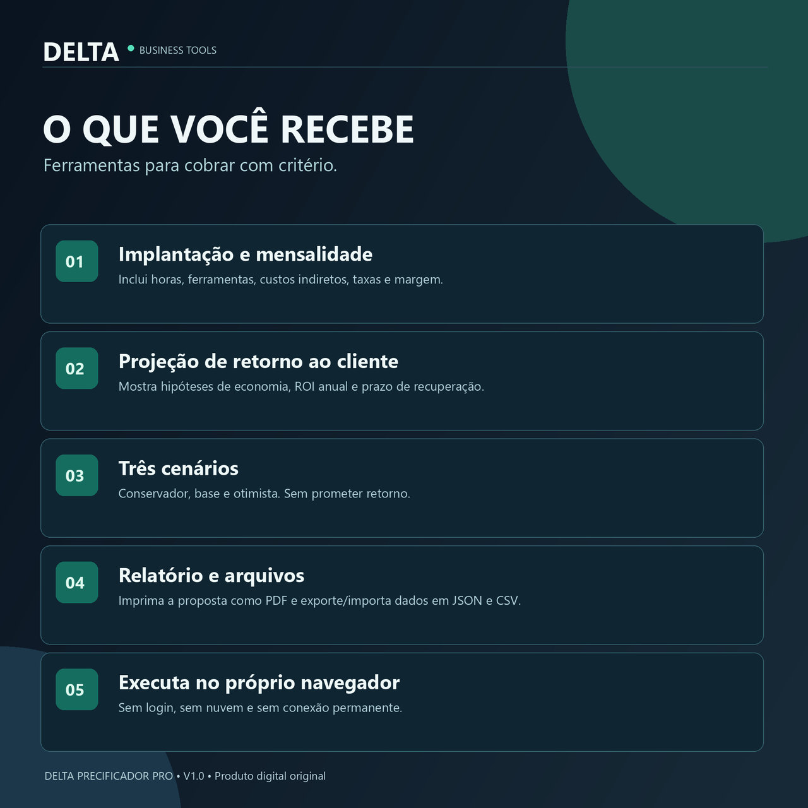
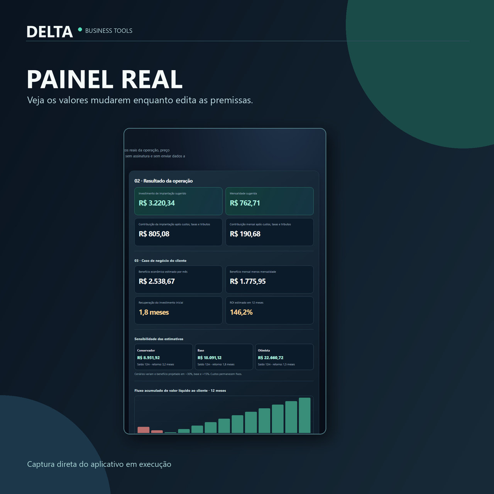
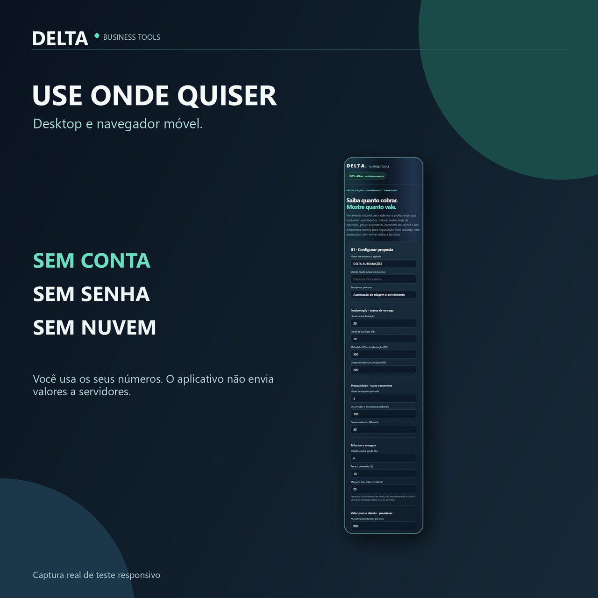

Quanto cobrar? Quanto vale?
Precifique projetos de automação com custos reais e explique o retorno esperado ao cliente, sem depender de assinaturas ou processamento em nuvem.

Feito para o trabalho comercial.
Preço sustentável
Custos de implantação e manutenção, tributos, despesas indiretas, taxas e margem desejada.
Valor para o cliente
Projeção baseada em tempo de tarefas, automação viável e parte do benefício economicamente realizável.
Proposta e exportação
Relatório para impressão em PDF, arquivo CSV, cenários JSON e importação de dados.



Perguntas frequentes
Preciso instalar algo?
O produto é distribuído em ZIP com arquivos HTML e JavaScript que funcionam em navegadores recentes. Não exige instalador nem conta na nuvem.
Os meus dados são enviados à Delta?
Não. A versão atual funciona offline no computador do usuário e não possui conexão de telemetria.
Posso usar os relatórios nas minhas propostas?
A licença proposta permite utilizar comercialmente os relatórios gerados, mas não redistribuir o próprio aplicativo.